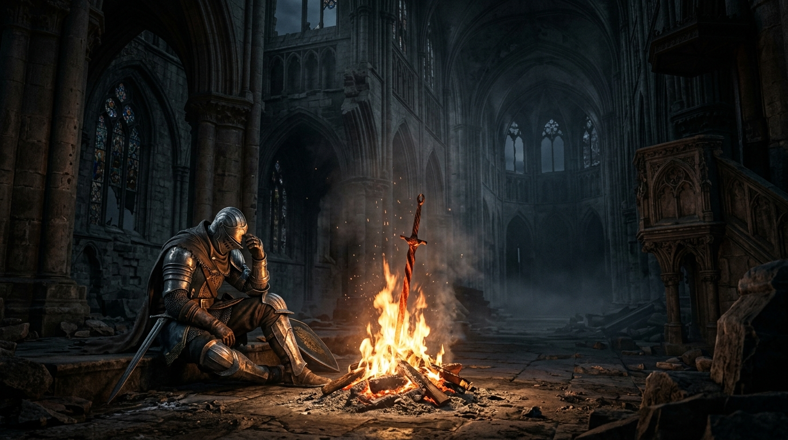

Nito, Primero de los Muertos
Reclamó el Alma de la Muerte. Administrador de la decadencia y el reposo sepulcral en el lecho de la roca madre.

«Y con el Fuego vino la disparidad. Calor y frío, vida y muerte, y por supuesto... Luz y Oscuridad. Explora las leyendas, los titanes caídos y las reliquias que forjaron el destino del No Muerto Elegido.»
Reclamó el Alma de la Muerte. Administrador de la decadencia y el reposo sepulcral en el lecho de la roca madre.
Reclamó el Alma de la Vida. Maestra de la piromancia primitiva que con sus Hijas del Caos tejió tempestades de fuego.
Reclamó el Alma de la Luz. Líder de los dioses de Anor Londo que desgarró las escamas de los dragones con arcos de relámpago.
Reclamó el Alma Oscura (Dark Soul). Fácilmente olvidado por los dioses, fragmentó su alma entre los hombres creando la Humanidad.